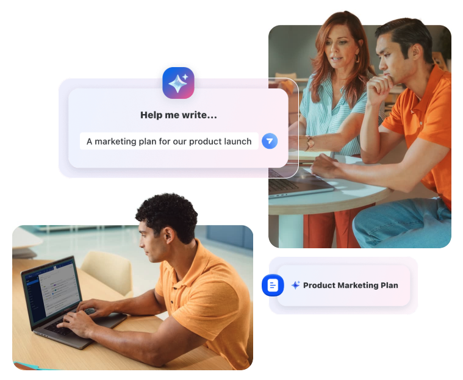

Transforme suas informações em ação usando IA Companion
Faça mais com zoom workspace: sua plataforma de trabalho centrada em IA, que conta com IA companion.
Conheça o Zoom

Fortalecendo organizações em todos os setores e regiões geográficas
O Zoom é usado por organizações de todos os setores e regiões geográficas, incluindo empresas da lista Fortune 500, instituições de ensino, organizações sem fins lucrativos e órgãos governamentais.
Explorar soluções